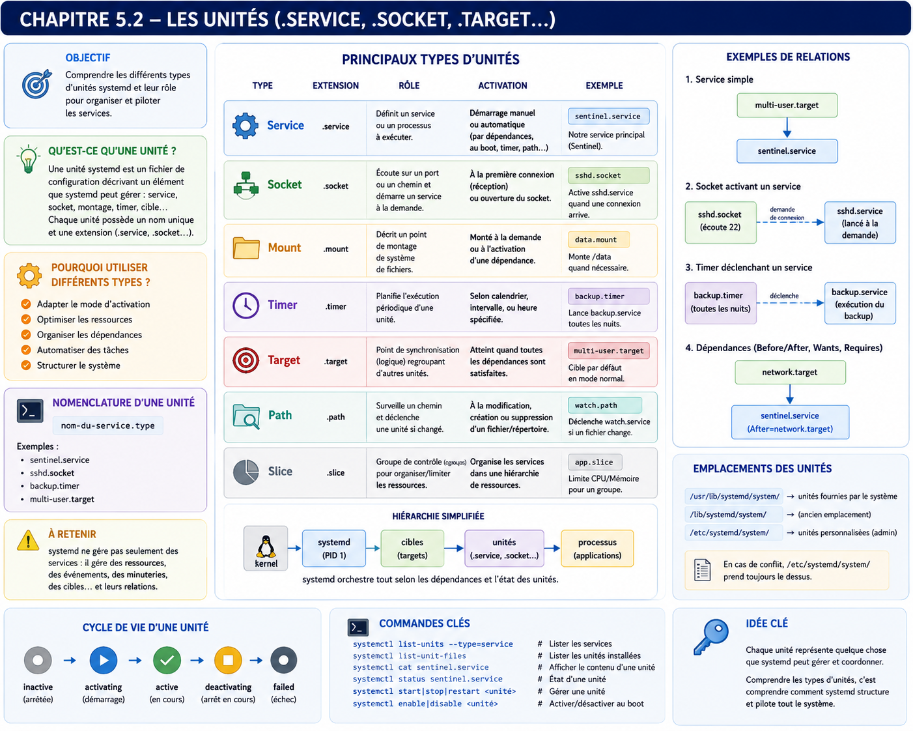

Chapitre 5.2 — Les unités systemd
Campagne 5 — systemd et services
« Dans systemd, tout est une unité. Comprendre les unités, c'est comprendre le système lui-même. »
Vous êtes ici
Partie I — Construire un socle sécurisé
Campagne 5 — systemd et les services
5.1 Comprendre systemd
► 5.2 Les unités (.service, .socket, .target…)
5.3 Créer le service Sentinel
5.4 Sandboxing systemd
5.5 Capacités Linux
5.6 Journalisation avec journald
5.7 Supervision et redémarrage automatique
5.8 Mission : rendre Sentinel résilient
Objectifs pédagogiques
À la fin de ce chapitre, vous serez capable de :
- comprendre ce qu'est une Unit dans systemd ;
- distinguer les principaux types d'unités ;
- comprendre pourquoi systemd manipule bien plus que des services ;
- expliquer le rôle des fichiers
.service,.socket,.target,.timer,.mount,.path, etc. ; - concevoir une architecture composée de plusieurs unités coopérant entre elles ;
- préparer Sentinel à exploiter pleinement l'écosystème systemd.
Pourquoi ce chapitre existe
Lorsqu'un administrateur découvre systemd, il pense généralement :
« Je vais écrire un fichier
sentinel.service. »
C'est effectivement ce que nous ferons. Mais cela représente à peine une petite partie de ce que systemd est capable de faire. Dans une infrastructure moderne, un service n'est presque jamais isolé. Prenons Sentinel. Il peut dépendre :
- du réseau ;
- d'un socket ;
- d'un montage réseau ;
- d'un certificat ;
- d'une minuterie ;
- d'un répertoire surveillé ;
- d'un conteneur Podman.
Tous ces éléments sont décrits sous forme d'unités. Comprendre cette architecture est indispensable avant de créer notre premier service.
Théorie détaillée
Qu'est-ce qu'une unité ?
Une unité (Unit) est l'objet fondamental manipulé par systemd. Elle représente une ressource dont systemd connaît :
- l'identité ;
- l'état ;
- les dépendances ;
- le cycle de vie.
Autrement dit, systemd ne gère pas directement des processus. Il gère des unités. Chaque unité est décrite par un fichier texte. Par exemple : sshd.service ou multi-user.target ou tmp.mount ou logrotate.timer Tous ces objets sont administrés de manière uniforme.
Une architecture orientée objets
Visualisons cette idée.
Chaque type possède une responsabilité bien précise. L'ensemble forme un graphe cohérent.
Les fichiers d'unités
Toutes les unités possèdent un fichier de configuration. Par exemple : /usr/lib/systemd/system/ contient généralement les unités fournies par les paquets RPM. À l'inverse, les personnalisations locales sont placées dans : /etc/systemd/system/ Cette séparation est importante. Les mises à jour RPM peuvent remplacer les fichiers du premier répertoire. Les fichiers du second sont destinés à l'administrateur. Nous y placerons bientôt : sentinel.service
Les unités .service
Les plus connues. Une unité .service décrit un service. Exemple : sshd.service Elle indique notamment :
- quel programme lancer ;
- sous quel utilisateur ;
- avec quelles dépendances ;
- comment arrêter le processus ;
- quand redémarrer ;
- quelles limites appliquer.
Pour Sentinel, nous écrirons prochainement un fichier très proche de celui-ci.
Les unités .socket
Les unités .socket sont moins connues. Elles permettent à systemd d'écouter sur une socket avant même que le service correspondant ne soit lancé. Schématiquement :
Le service ne démarre qu'au premier accès. Ce mécanisme est appelé : Socket Activation Il réduit :
- le temps de démarrage ;
- la consommation mémoire ;
- le nombre de services actifs.
Nous reviendrons sur ce mécanisme lors des chapitres avancés.
Les unités .target
Une Target représente un objectif. Elle ne lance aucun programme. Elle regroupe simplement plusieurs unités. Par exemple : multi-user.target signifie :
Le système est opérationnel en mode serveur.
Cette Target dépend notamment de :
- sshd ;
- firewalld ;
- NetworkManager ;
- chronyd.
Lorsque cette cible est atteinte, tous ces composants sont normalement actifs.
Les unités .timer
Un .timer remplace avantageusement de nombreuses tâches Cron. Par exemple, au lieu de :
on obtient :
Le timer déclenche directement une unité service. Cette approche présente plusieurs avantages. systemd connaît :
- l'historique des exécutions ;
- les erreurs ;
- les journaux ;
- les dépendances.
Cron, lui, lance simplement une commande.
Les unités .path
Une unité .path surveille un fichier ou un répertoire. Exemple. /etc/sentinel/ Dès qu'un changement est détecté, systemd peut lancer automatiquement : sentinel-reload.service Cette fonctionnalité est particulièrement intéressante pour :
- les fichiers de configuration ;
- les certificats ;
- les secrets.
Les unités .mount
Les systèmes de fichiers deviennent eux aussi des objets systemd. Par exemple : /data est représenté par : data.mount Sentinel pourra ainsi dépendre explicitement de ce montage. Le service ne démarrera que lorsque les données seront réellement accessibles. Cela évite de nombreux incidents lors du démarrage.
Les unités .device
Chaque périphérique détecté par le noyau peut être représenté comme une unité. Par exemple :
- un disque ;
- une carte réseau ;
- un périphérique USB.
Cette intégration permet de construire des dépendances très fines. Par exemple :
Les unités .slice
Voici un type souvent méconnu. Les .slice permettent d'organiser les cgroups. Schématiquement :
Chaque slice peut posséder :
- des limites CPU ;
- des limites mémoire ;
- des quotas.
Nous exploiterons cette fonctionnalité dans les chapitres consacrés au sandboxing.
Les unités .scope
Les scopes représentent des processus déjà existants. Ils sont généralement créés automatiquement. Par exemple : une session utilisateur ouverte via SSH. systemd peut alors superviser ce groupe de processus, même s'il ne les a pas directement créés.
Les dépendances entre unités
La véritable puissance de systemd apparaît lorsque plusieurs unités coopèrent. Deux relations différentes doivent être déclarées séparément : la dépendance indique quelles unités sont entraînées dans la même transaction, tandis que l'ordre indique laquelle doit démarrer avant l'autre.
After= ne démarre donc pas l'autre unité et Wants= n'impose aucun ordre. Requires= est une dépendance plus forte : elle doit être réservée aux composants sans lesquels le service ne peut réellement pas être activé. Par exemple, un montage indispensable peut justifier RequiresMountsFor=/var/lib/sentinel, tandis qu'une simple connectivité réseau se prête souvent mieux à une dépendance faible et à une logique de nouvelle tentative dans l'application.
L'ensemble forme un graphe de transactions. systemd calcule l'ordre à partir des relations Before= et After= ; il n'invente pas cet ordre à partir de Wants= ou Requires=.
Une vision graphique
L'architecture devient beaucoup plus expressive que de simples scripts Shell.
Comment systemd découvre les unités
Lorsque le système démarre, systemd ne parcourt pas l'intégralité du disque à la recherche de fichiers. Il consulte plusieurs emplacements bien précis. Schématiquement :
Chaque répertoire possède une responsabilité différente. Comprendre cette hiérarchie est indispensable avant de créer Sentinel.
Les unités fournies par les paquets RPM
Lorsqu'un paquet est installé :
dnf install openssh-server
celui-ci dépose généralement son unité dans : /usr/lib/systemd/system/ Par exemple : /usr/lib/systemd/system/sshd.service ou encore : /usr/lib/systemd/system/firewalld.service Ces fichiers appartiennent au paquet RPM. Ils ne doivent pratiquement jamais être modifiés directement. Pourquoi ? Parce qu'une mise à jour du paquet peut les remplacer. Toute modification locale serait alors perdue.
Les personnalisations locales
L'administrateur dispose d'un autre emplacement. /etc/systemd/system/ C'est ici que seront placées :
- les nouvelles unités ;
- les personnalisations ;
- Sentinel.
Par exemple : /etc/systemd/system/sentinel.service Les fichiers présents dans ce répertoire ont priorité sur ceux du paquet RPM. Cette séparation est volontaire. Elle protège les personnalisations lors des mises à jour.
Les unités générées dynamiquement
Le troisième répertoire est plus discret. /run/systemd/system/ Il contient des unités créées à l'exécution. Par exemple :
- des unités temporaires ;
- certains générateurs ;
- des modifications non persistantes.
Son contenu disparaît après un redémarrage. Nous l'utiliserons rarement directement, mais il est utile de connaître son existence lors des diagnostics.
L'ordre de priorité
Lorsqu'une unité existe à plusieurs endroits, systemd applique un ordre de priorité très précis.
Autrement dit, l'administrateur peut remplacer localement une unité fournie par un paquet, sans jamais modifier le fichier d'origine. Cette approche est beaucoup plus robuste que l'édition directe des fichiers RPM.
Les fichiers "drop-in"
Modifier complètement une unité n'est pourtant pas toujours souhaitable. Prenons un exemple. Le paquet RPM fournit : sshd.service Vous souhaitez simplement modifier : Restart= Faut-il recopier l'intégralité du fichier ? Non. systemd propose un mécanisme extrêmement élégant : les drop-in. Ils sont placés dans un répertoire dédié. Par exemple : /etc/systemd/system/sshd.service.d/ À l'intérieur, on peut créer : override.conf contenant uniquement :
[Service]
Restart=always
Au démarrage, systemd fusionnera automatiquement :
- le fichier d'origine ;
- les overrides.
Cette approche limite fortement les conflits lors des mises à jour.
Les liens symboliques et l'activation
Une question revient souvent. Quelle différence existe-t-il entre :
systemctl start
et
systemctl enable
La réponse est essentielle.
start
systemctl start sentinel
Signifie : Démarrer maintenant. Rien de plus. Après un redémarrage, le service ne repartira pas automatiquement.
enable
systemctl enable sentinel
Ne démarre pas le service. Cette commande crée généralement un ou plusieurs liens symboliques. Par exemple :
Autrement dit, systemd comprend désormais que Sentinel fait partie des services à lancer lorsque le système atteint : multi-user.target Cette approche est très différente de celle de SysVinit, où des liens symboliques étaient créés dans différents niveaux d'exécution (runlevels).
La combinaison systemctl enable --now sentinel réalise les deux actions : activer l'unité pour les prochains démarrages et la démarrer immédiatement. À l'inverse, disable retire l'activation sans arrêter le service courant ; disable --now enchaîne les deux opérations. Enfin, mask est plus fort que disable : il rend l'unité impossible à démarrer, même manuellement ou par dépendance, jusqu'à unmask.
Les commandes essentielles
Au fil des chapitres suivants, quelques commandes deviendront des réflexes. Afficher l'état d'un service.
systemctl status sentinel
Démarrer.
systemctl start sentinel
Arrêter.
systemctl stop sentinel
Redémarrer.
systemctl restart sentinel
Recharger la configuration.
systemctl reload sentinel
Attention. Toutes les applications ne savent pas recharger leur configuration. Cette commande n'est disponible que si le service la prend en charge. Activer au démarrage.
systemctl enable sentinel
Désactiver.
systemctl disable sentinel
Recharger les unités systemd.
systemctl daemon-reload
Cette commande est souvent oubliée. Pourtant, elle est indispensable après la création ou la modification d'un fichier : .service Sans elle, systemd continue d'utiliser son ancienne représentation interne.
Pour inspecter la définition réellement assemblée, utiliser :
systemctl cat sentinel
Pour créer un drop-in sans modifier le fichier du paquet :
sudo systemctl edit sentinel
systemctl show sentinel expose enfin les propriétés résolues sous une forme adaptée aux scripts. Ces trois commandes distinguent le fichier source, les fragments de surcharge et l'état effectif du gestionnaire.
Les états d'une unité
Une unité systemd peut se trouver dans plusieurs états. Les plus courants sont : active Le service fonctionne. inactive Le service est arrêté. failed Le démarrage ou l'exécution a échoué. activating Le service est en cours de démarrage. deactivating Le service est en cours d'arrêt. Ces états sont extrêmement utiles pour les outils de supervision. Ils permettent de distinguer :
- un arrêt volontaire ;
- un crash ;
- un démarrage incomplet.
Une approche uniforme
L'une des grandes qualités de systemd est sa cohérence. Quelle que soit l'unité manipulée, les commandes restent pratiquement identiques. Par exemple :
systemctl status sshd
systemctl status firewalld
systemctl status chronyd
systemctl status podman
Demain :
systemctl status sentinel
L'administrateur n'apprend qu'un seul modèle mental. Il l'applique ensuite à l'ensemble du système.
Pourquoi cette uniformité est précieuse ?
Imaginez une infrastructure contenant :
- 400 serveurs ;
- 250 services différents ;
- plusieurs équipes d'exploitation.
Si chaque application utilisait :
- sa propre commande de démarrage ;
- son propre système de logs ;
- son propre mécanisme de redémarrage ;
la maintenance deviendrait extrêmement complexe. systemd impose un cadre commun. L'application conserve sa logique métier. Le système d'exploitation fournit une interface d'administration homogène. C'est précisément cette homogénéité qui permet aux équipes d'exploitation d'administrer plusieurs centaines de services sans devoir apprendre les particularités de chacun.
Approfondissement
Une unité n'est pas un processus
C'est probablement la confusion la plus répandue lorsque l'on découvre systemd. Beaucoup d'administrateurs assimilent naturellement :
Processus
=
Service
Pour systemd, cette équivalence est fausse. Une unité représente une intention. Le processus n'est qu'une conséquence. Prenons Sentinel. sentinel.service ne décrit pas uniquement :
Lance ce programme.
Il décrit :
- quand le lancer ;
- dans quel ordre ;
- avec quels privilèges ;
- quelles ressources lui attribuer ;
- quand le redémarrer ;
- quels journaux produire ;
- comment l'arrêter ;
- quels autres composants doivent exister avant lui.
Autrement dit, l'unité représente le contrat d'exploitation du service. Le processus n'est qu'un détail d'implémentation.
systemd construit un graphe, pas une liste
Lorsqu'un administrateur lance :
systemctl start sentinel
Il imagine souvent la séquence suivante.
En réalité, systemd raisonne sous forme de graphe.
Avant de lancer Sentinel, systemd construit une transaction : une dépendance forte en échec peut empêcher le démarrage, tandis qu'une dépendance faible peut échouer sans bloquer Sentinel. Les relations d'ordre déterminent ensuite ce qui peut être lancé en parallèle. Cette approche est très différente d'un simple script Shell.
Les unités deviennent une API du système
Une autre manière de voir systemd consiste à considérer les unités comme une API. Prenons un développeur. Il n'a pas besoin de connaître :
- la commande exacte pour démarrer Sentinel ;
- l'emplacement du binaire ;
- les options utilisées ;
- les dépendances.
Il lui suffit d'écrire :
systemctl restart sentinel
Toute la complexité est encapsulée dans l'unité. Cette abstraction facilite énormément :
- l'administration ;
- les scripts ;
- Ansible ;
- la supervision.
Les unités comme documentation vivante
Dans de nombreuses entreprises, les unités servent également de documentation. Prenons ce fichier.
[Unit]
Description=Sentinel Security Agent
After=network-online.target
Wants=network-online.target
En quelques lignes, nous apprenons déjà :
- le rôle du service ;
- sa dépendance faible au jalon réseau ;
- son ordre de démarrage.
Une unité bien écrite documente naturellement une partie de l'architecture.
Concevoir la politique
Un architecte ne commence jamais par écrire :
ExecStart=
Il commence par identifier les responsabilités du service. Prenons Sentinel. Quelles sont ses responsabilités ?
- collecter des événements ;
- communiquer avec FreeIPA ;
- écouter sur TLS ;
- produire des journaux ;
- survivre aux redémarrages.
Une fois ces besoins identifiés, ils sont traduits dans l'unité. L'architecture précède toujours l'implémentation.
Une unité doit rester simple
Une erreur classique consiste à vouloir transformer une unité systemd en script Bash. Par exemple :
ExecStart=/bin/bash -c "
commande1
commande2
commande3
commande4
..."
Cette approche est généralement un mauvais signe. Une unité doit rester descriptive. Si plusieurs dizaines de lignes de Shell deviennent nécessaires, c'est souvent qu'une partie de la logique devrait être déplacée :
- dans l'application ;
- dans Ansible ;
- dans un script dédié.
systemd orchestre. Il ne remplace pas un moteur d'automatisation.
Concevoir des composants réutilisables
Une unité bien conçue peut survivre à plusieurs réécritures de l'application. Demain, Sentinel pourra être :
- une application Python ;
- une application Rust ;
- un conteneur Podman.
L'unité conservera probablement :
- le même nom ;
- les mêmes dépendances ;
- les mêmes contraintes ;
- les mêmes objectifs.
Cette stabilité simplifie énormément les migrations.
Point de vue offensif
Un attaquant cherche souvent les applications "hors cadre". Par exemple.
python service.py &
L'application fonctionne. Mais :
- elle n'est pas supervisée ;
- elle n'est pas intégrée aux journaux ;
- elle n'est pas redémarrée ;
- personne ne sait réellement comment elle a été lancée.
Ces applications sont particulièrement intéressantes. Pourquoi ? Parce qu'elles échappent souvent :
- aux procédures ;
- aux audits ;
- aux outils d'exploitation.
L'intégration dans systemd réduit fortement cette zone d'ombre.
Les unités oubliées
Autre scénario fréquent. Une ancienne unité existe toujours. old-monitor.service Personne ne sait plus à quoi elle sert. Elle démarre pourtant à chaque redémarrage. Un attaquant apprécie ce type de dette technique. Chaque unité devrait posséder :
- un propriétaire ;
- une documentation ;
- une justification.
Une architecture propre limite naturellement ce type de risque.
En entreprise
Dans une entreprise mature, les unités sont gérées exactement comme le code applicatif. Cycle classique :
Modifier directement : /etc/systemd/system/ sur un serveur de production est généralement interdit, sauf procédure exceptionnelle. Pourquoi ? Parce que cette modification ne serait :
- ni versionnée ;
- ni relue ;
- ni reproductible.
L'objectif est que chaque serveur puisse être reconstruit automatiquement.
Exemple Sentinel
Supposons que l'équipe souhaite modifier :
Restart=always
Plutôt que d'éditer directement le serveur, la modification suit généralement ce chemin.
Cette discipline paraît plus lourde. Elle réduit pourtant énormément les écarts entre les environnements.
Culture technique
Les unités systemd possèdent une syntaxe volontairement proche des fichiers INI. Par exemple :
[Unit]
Description=...
After=...
[Service]
ExecStart=...
[Install]
WantedBy=...
Cette syntaxe est suffisamment simple pour être lisible, mais suffisamment expressive pour décrire des architectures très complexes. Elle est également facilement manipulable par :
- Ansible ;
- les outils de packaging RPM ;
- les scripts d'administration.
C'est l'une des raisons de son succès.
Piège classique
Modifier directement les unités fournies par les RPM
Prenons : /usr/lib/systemd/system/httpd.service Vous modifiez directement le fichier. Tout fonctionne. Quelques semaines plus tard : dnf update Le paquet est mis à jour. Votre modification disparaît. Cette situation est extrêmement fréquente. La bonne pratique consiste à utiliser :
- un drop-in ;
- ou une unité personnalisée dans :
/etc/systemd/system/ Les fichiers installés par les paquets doivent être considérés comme du code fourni par l'éditeur. Ils ne constituent pas un espace de personnalisation.
Oublier daemon-reload
Après avoir créé : sentinel.service beaucoup d'administrateurs exécutent immédiatement :
systemctl start sentinel
systemd répond : Unit not found Pourquoi ? Parce que systemd utilise une représentation interne des unités. Après toute création ou modification d'un fichier d'unité, il faut exécuter :
systemctl daemon-reload
Cette commande ne redémarre aucun service. Elle demande simplement à systemd de relire l'ensemble des fichiers d'unités. C'est une commande qui deviendra rapidement un réflexe lors de cette campagne.
TP 1 — Inventorier les unités et leur activation
Objectif
Découvrir concrètement le fonctionnement des différentes unités systemd et comprendre comment elles coopèrent pour former un système cohérent. À l'issue de ce laboratoire, vous serez capable de :
- localiser les unités d'un système AlmaLinux ;
- identifier les dépendances entre services ;
- comprendre les mécanismes d'activation (
start,enable) ; - manipuler les unités sans encore créer Sentinel ;
- préparer l'environnement qui accueillera
sentinel.service.
Architecture
L'objectif n'est pas encore de modifier cette architecture. Il s'agit d'apprendre à la lire.
Étape 1 — Explorer les unités disponibles
Afficher toutes les unités chargées.
systemctl list-units
Puis uniquement les services.
systemctl list-units --type=service
Puis les timers.
systemctl list-units --type=timer
Puis les sockets.
systemctl list-units --type=socket
Observer la quantité d'objets gérés par systemd. Vous découvrirez rapidement que les services ne représentent qu'une partie de son activité.
Étape 2 — Identifier les fichiers d'unités
Choisissez plusieurs services connus. Par exemple : firewalld sshd chronyd Localisez leurs fichiers.
systemctl cat firewalld
Puis :
systemctl cat sshd
Repérez :
- le chemin du fichier ;
- les sections
[Unit],[Service]et[Install].
N'essayez pas encore de comprendre chaque directive. Nous les étudierons progressivement.
Étape 3 — Comprendre l'activation
Afficher si SSH démarre automatiquement.
systemctl is-enabled sshd
Puis :
systemctl is-active sshd
Comparer les deux réponses. Répondez ensuite à cette question. Pourquoi un service peut-il être :
- actif mais désactivé ?
ou
- activé mais actuellement arrêté ?
Cette distinction est fondamentale.
TP 2 — Explorer le graphe et les activations spécialisées
Étape 4 — Observer les dépendances
Afficher les dépendances de :
systemctl list-dependencies sshd
Puis :
systemctl list-dependencies multi-user.target
Dessinez rapidement le graphe obtenu. Ne cherchez pas à tout comprendre. Cherchez uniquement à visualiser que systemd raisonne sous forme de réseau de dépendances.
Étape 5 — Étudier un timer
Choisissez un timer existant. Par exemple.
systemctl status logrotate.timer
Puis :
systemctl cat logrotate.timer
Identifiez ensuite le service associé. logrotate.service Comprenez la relation :
Cette logique remplacera avantageusement de nombreuses tâches Cron.
Étape 6 — Observer les sockets
Lister :
systemctl list-units --type=socket
Choisissez une socket existante. Observez :
- quel service lui est associé ;
- si ce service est actif ;
- si la socket reste disponible même lorsque le service est arrêté.
Réfléchissez aux avantages de cette approche.
Étape 7 — Préparer Sentinel
Sans encore créer le fichier : sentinel.service Établissez la liste des unités dont Sentinel dépendra probablement. Par exemple :
network-online.targetfirewalld.servicesystemd-journald.socket
Discutez ensuite de celles qui devraient être :
- obligatoires (
Requires=) ; - simplement ordonnées (
After=) ; - facultatives (
Wants=).
Cette réflexion constituera la base du prochain chapitre.
Mission d'ingénieur
Contexte
Votre entreprise possède plus de 300 serveurs AlmaLinux. Au fil des années, plusieurs équipes ont créé leurs propres services. Les constats sont préoccupants. Certaines applications utilisent : .service D'autres démarrent directement depuis : cron Certaines surveillent leurs fichiers grâce à : inotify D'autres utilisent encore des scripts Shell exécutés au démarrage. Les mécanismes sont hétérogènes. La maintenance devient de plus en plus difficile.
La direction souhaite standardiser l'ensemble de l'exploitation autour de systemd.
Votre mission
Vous devez proposer une architecture standard répondant notamment aux questions suivantes.
- Quels composants doivent être décrits par des unités
.service? - Lesquels gagneraient à utiliser des
.timer? - Quand utiliser une
.socketplutôt qu'un service toujours actif ? - Quels montages doivent devenir des
.mount? - Quels fichiers de configuration devraient être surveillés par des
.path?
Votre objectif est de produire une architecture cohérente, pas simplement une liste de fichiers.
Impact sur Sentinel
Nous connaissons désormais les briques élémentaires de systemd. Dans le prochain chapitre, Sentinel cessera définitivement d'être un simple programme Python. Nous construirons une unité : sentinel.service Cette unité définira notamment :
- comment lancer Sentinel ;
- quand le lancer ;
- sous quel utilisateur ;
- après quels services ;
- comment l'arrêter ;
- comment le redémarrer ;
- où envoyer les journaux.
À partir de ce moment, Sentinel deviendra un véritable citoyen du système d'exploitation. Toutes les fonctionnalités étudiées dans les chapitres suivants (sandboxing, capacités Linux, supervision, journald...) s'appuieront sur cette unité.
Synthèse
- Une Unit est l'objet fondamental manipulé par systemd.
- Les services ne représentent qu'un type d'unité parmi beaucoup d'autres.
- Les principaux types sont
.service,.socket,.target,.timer,.mount,.path,.sliceet.scope. - Les dépendances entre unités forment un graphe et non une simple liste.
- Les unités fournies par les RPM résident généralement dans
/usr/lib/systemd/system/. - Les personnalisations administrateur doivent être placées dans
/etc/systemd/system/. - Les drop-in permettent de modifier une unité sans remplacer le fichier d'origine.
startetenablerépondent à deux besoins différents.daemon-reloadest indispensable après toute modification d'une unité.
Schéma récapitulatif

Pour aller plus loin
Nous avons désormais toutes les connaissances nécessaires pour créer notre propre unité. Le chapitre 5.3 — Créer le service Sentinel constituera un tournant dans le manuel : pour la première fois, l'application Sentinel sera intégrée à systemd comme un véritable service système, avec un cycle de vie complet, une identité propre et une exploitation conforme aux standards d'une infrastructure professionnelle.
← 5.1 — Comprendre systemd · 5.3 — Créer le service Sentinel →